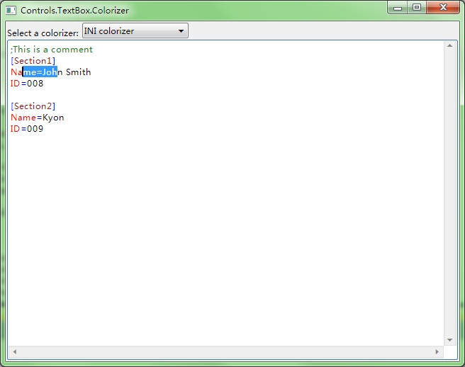
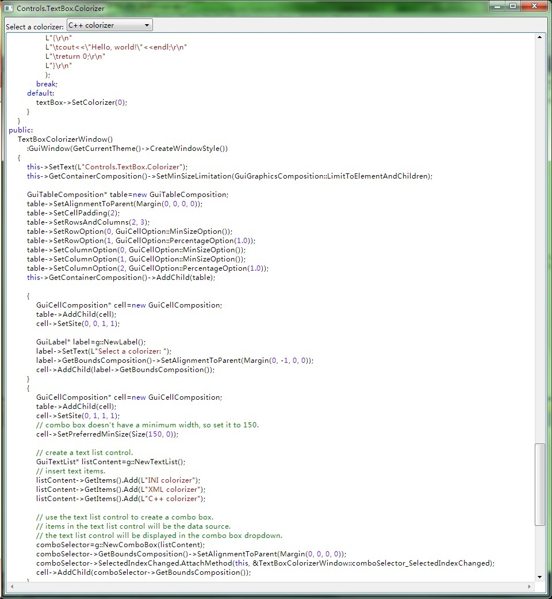
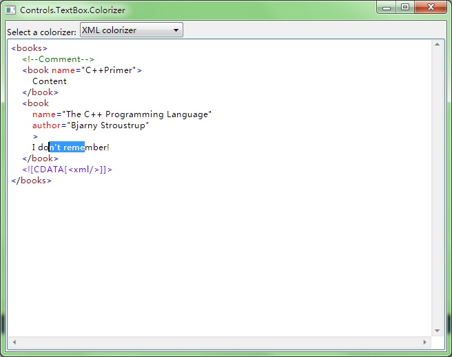

---- GPU Accelerated C++ User Interface |
|||||
| HOME | GETTING START | DEMOS | DOWNLOAD | DOCUMENT | CONTACT |
TextBox.Colorizer  
#include "..\..\Public\Source\GacUIIncludes.h"
#include <Windows.h>
int CALLBACK WinMain(HINSTANCE hInstance, HINSTANCE hPrevInstance, LPSTR lpCmdLine, int CmdShow)
{
return SetupWindowsDirect2DRenderer();
}
class IniColorizer : public GuiTextBoxColorizerBase
{
typedef collections::Array<text::ColorEntry> ColorArray;
private:
static const int NORMAL_COLOR=0;
static const int SECTION_COLOR=1;
static const int ATTRIBUTE_COLOR=2;
static const int OPERATOR_COLOR=3;
static const int COMMENT_COLOR=4;
ColorArray colors;
public:
IniColorizer()
{
text::ColorEntry entry=win7::Win7GetTextBoxTextColor();
colors.Resize(5);
// text color
colors[NORMAL_COLOR]=entry;
// section color
entry.normal.text=Color(163, 21, 21);
colors[SECTION_COLOR]=entry;
// attribute color
entry.normal.text=Color(255, 0, 0);
colors[ATTRIBUTE_COLOR]=entry;
// operator color
entry.normal.text=Color(0, 0, 255);
colors[OPERATOR_COLOR]=entry;
// operator color
entry.normal.text=Color(24, 128, 24);
colors[COMMENT_COLOR]=entry;
}
int GetLexerStartState()override
{
return 0;
}
int GetContextStartState()override
{
return 0;
}
void ColorizeLineWithCRLF(const wchar_t* text, unsigned __int32* colors, int length, int& lexerState, int& contextState)override
{
if(length>0)
{
if(text[0]==L';')
{
for(int i=0;i<length;i++)
{
colors[i]=COMMENT_COLOR;
}
}
else if(text[0]==L'[')
{
for(int i=0;i<length;i++)
{
colors[i]=(text[i]==L'[' || text[i]==L']')?OPERATOR_COLOR:SECTION_COLOR;
}
}
else
{
bool afterAssign=false;
for(int i=0;i<length;i++)
{
if(text[i]==L'=' && !afterAssign)
{
afterAssign=true;
colors[i]=OPERATOR_COLOR;
}
else
{
colors[i]=afterAssign?NORMAL_COLOR:ATTRIBUTE_COLOR;
}
}
}
}
}
const ColorArray& GetColors()override
{
return colors;
}
};
class XmlColorizer : public GuiTextBoxRegexColorizer
{
public:
XmlColorizer()
{
text::ColorEntry entry=win7::Win7GetTextBoxTextColor();
SetDefaultColor(entry);
entry.normal.text=Color(0, 128, 0);
AddToken(L"/<!--([^/-]|-[^/-]|--[^>])*--/>", entry);
entry.normal.text=Color(128, 0, 255);
AddToken(L"/<!/[CDATA/[([^/]]|/][^/]]|/]/][^>])*/]/]/>", entry);
entry.normal.text=Color(0, 0, 0);
AddToken(L"\"[^\"]*\"", entry);
entry.normal.text=Color(0, 0, 255);
AddToken(L"[<>=]", entry);
entry.normal.text=Color(255, 0, 0);
AddToken(L"[a-zA-Z0-9_/-:]+", entry);
entry.normal.text=Color(163, 21, 21);
AddExtraToken(entry);
Setup();
}
void ColorizeTokenContextSensitive(const wchar_t* text, vint start, vint length, vint& token, int& contextState)override
{
// 0 < 1 name 2 att > 0
switch(token)
{
case 3:
if(length==1)
{
switch(text[start])
{
case '<':
contextState=1;
break;
case '>':
contextState=0;
break;
}
}
break;
case 4:
switch(contextState)
{
case 0:
token=-1;
break;
case 1:
token=5;
contextState=2;
break;
}
break;
}
}
int GetContextStartState()override
{
return 0;
}
};
const wchar_t* CppKeywords=
L"__abstract|"
L"__alignof|"
L"__asm|"
L"__assume|"
L"__based|"
L"__box|"
L"__cdecl|"
L"__declspec|"
L"__delegate|"
L"__event|"
L"__except|"
L"__fastcall|"
L"__finally|"
L"__forceinline|"
L"__gc|"
L"__hook|"
L"__identifier|"
L"__if_exists|"
L"__if_not_exists|"
L"__inline|"
L"__int16|"
L"__int32|"
L"__int64|"
L"__int8|"
L"__interface|"
L"__leave|"
L"__m128d|"
L"__m128|"
L"__m128i|"
L"__m64|"
L"__multiple_inheritance|"
L"__nogc|"
L"__noop|"
L"__pin|"
L"__property|"
L"__raise|"
L"__sealed|"
L"__single_inheritance|"
L"__stdcall|"
L"__super|"
L"__try|"
L"__except|"
L"__finally|"
L"__try_cast|"
L"__unaligned|"
L"__unhook|"
L"__uuidof|"
L"__value|"
L"__virtual_inheritance|"
L"__w64|"
L"__wchar_t|"
L"wchar_t|"
L"abstract|"
L"array|"
L"bool|"
L"break|"
L"case|"
L"catch|"
L"char|"
L"class|"
L"const_cast|"
L"const|"
L"continue|"
L"decltype|"
L"default|"
L"delegate|"
L"delete|"
L"do|"
L"double|"
L"dynamic_cast|"
L"else|"
L"enum|"
L"event|"
L"explicit|"
L"extern|"
L"false|"
L"finally|"
L"float|"
L"for|"
L"friend|"
L"gcnew|"
L"generic|"
L"goto|"
L"if|"
L"initonly|"
L"inline|"
L"int|"
L"interface|"
L"interior_ptr|"
L"literal|"
L"long|"
L"mutable|"
L"namespace|"
L"new|"
L"new|"
L"nullptr|"
L"operator|"
L"private|"
L"property|"
L"property|"
L"protected|"
L"public|"
L"register|"
L"reinterpret_cast|"
L"return|"
L"sealed|"
L"short|"
L"signed|"
L"sizeof|"
L"static_assert|"
L"static_cast|"
L"static|"
L"struct|"
L"switch|"
L"template|"
L"this|"
L"__thiscall|"
L"throw|"
L"true|"
L"try|"
L"typedef|"
L"typeid|"
L"typeid|"
L"typename|"
L"union|"
L"unsigned|"
L"using|"
L"virtual|"
L"void|"
L"volatile|"
L"while";
class CppColorizer : public GuiTextBoxRegexColorizer
{
public:
CppColorizer()
{
text::ColorEntry entry=win7::Win7GetTextBoxTextColor();
SetDefaultColor(entry);
entry.normal.text=Color(128, 0, 255);
AddToken(L"/d+(./d*)?([eE][+/-]?/d+)?", entry);
entry.normal.text=Color(163, 21, 21);
AddToken(L"\"([^\\\\\"]|\\\\/.)*\"", entry);
entry.normal.text=Color(0, 128, 0);
AddToken(L"////[^\r\n]*", entry);
AddToken(L"///*(//|[*]*[^*//])*/*+//", entry);
// debug this: L"//[*]([^*]|[*]+[^//])*[*]+//"
entry.normal.text=Color(0, 0, 255);
AddToken(L"#[a-zA-Z0-9_]*", entry);
AddToken(CppKeywords, entry);
AddToken(L"[a-zA-Z0-9_]+", GetDefaultColor());
Setup();
}
};
class TextBoxColorizerWindow : public GuiWindow
{
private:
GuiMultilineTextBox* textBox;
GuiComboBoxListControl* comboSelector;
void window_WindowClosing(GuiGraphicsComposition* sender, GuiRequestEventArgs& arguments)
{
arguments.cancel=!comboSelector->GetEnabled();
}
void comboSelector_SelectedIndexChanged(GuiGraphicsComposition* sender, GuiEventArgs& arguments)
{
comboSelector->SetEnabled(false);
this->GetBoundsComposition()->SetAssociatedCursor(GetCurrentController()->ResourceService()->GetSystemCursor(INativeCursor::LargeWaiting));
GetApplication()->InvokeAsync(Curry<void(TextBoxColorizerWindow*)>([](TextBoxColorizerWindow* window)
{
Ptr<GuiTextBoxColorizerBase> colorizer;
WString text;
switch(window->comboSelector->GetSelectedIndex())
{
case 0:
text=
L";This is a comment\r\n"
L"[Section1]\r\n"
L"Name=John Smith\r\n"
L"ID=008\r\n"
L"\r\n"
L"[Section2]\r\n"
L"Name=Kyon\r\n"
L"ID=009\r\n"
;
break;
case 1:
text=
L"<books>\r\n"
L"\t<!--Comment-->\r\n"
L"\t<book name=\"C++Primer\">\r\n"
L"\t\tContent\r\n"
L"\t</book>\r\n"
L"\t<![CDATA[<xml/>]]>\r\n"
L"</books>\r\n"
;
break;
case 2:
text=
L"#include <iostream>\r\n"
L"using namespace std;\r\n"
L"\r\n"
L"int main()\r\n"
L"{\r\n"
L"\t//This is a comment\r\n"
L"\t/**This*is/another\r\n"
L"\tcomment**/\r\n"
L"\tcout<<\"Hello, world!\"<endl;\r\n"
L"\treturn 0;\r\n"
L"}\r\n"
;
break;
}
GetApplication()->InvokeInMainThreadAndWait([text, window]()
{
window->textBox->SetColorizer(0);
window->textBox->SetText(text);
});
switch(window->comboSelector->GetSelectedIndex())
{
case 0:
colorizer=new IniColorizer;
break;
case 1:
colorizer=new XmlColorizer;
break;
case 2:
colorizer=new CppColorizer;
break;
}
GetApplication()->InvokeInMainThreadAndWait([colorizer, window]()
{
window->textBox->SetColorizer(colorizer);
window->GetBoundsComposition()->SetAssociatedCursor(GetCurrentController()->ResourceService()->GetDefaultSystemCursor());
window->comboSelector->SetEnabled(true);
});
})(this));
}
public:
TextBoxColorizerWindow()
:GuiWindow(GetCurrentTheme()->CreateWindowStyle())
{
this->SetText(L"Controls.TextBox.Colorizer");
this->GetContainerComposition()->SetMinSizeLimitation(GuiGraphicsComposition::LimitToElementAndChildren);
this->WindowClosing.AttachMethod(this, &TextBoxColorizerWindow::window_WindowClosing);
GuiTableComposition* table=new GuiTableComposition;
table->SetAlignmentToParent(Margin(0, 0, 0, 0));
table->SetCellPadding(2);
table->SetRowsAndColumns(2, 3);
table->SetRowOption(0, GuiCellOption::MinSizeOption());
table->SetRowOption(1, GuiCellOption::PercentageOption(1.0));
table->SetColumnOption(0, GuiCellOption::MinSizeOption());
table->SetColumnOption(1, GuiCellOption::MinSizeOption());
table->SetColumnOption(2, GuiCellOption::PercentageOption(1.0));
this->GetContainerComposition()->AddChild(table);
{
GuiCellComposition* cell=new GuiCellComposition;
table->AddChild(cell);
cell->SetSite(0, 0, 1, 1);
GuiLabel* label=g::NewLabel();
label->SetText(L"Select a colorizer: ");
label->GetBoundsComposition()->SetAlignmentToParent(Margin(0, -1, 0, 0));
cell->AddChild(label->GetBoundsComposition());
}
{
GuiCellComposition* cell=new GuiCellComposition;
table->AddChild(cell);
cell->SetSite(0, 1, 1, 1);
// combo box doesn't have a minimum width, so set it to 150.
cell->SetPreferredMinSize(Size(150, 0));
// create a text list control.
GuiTextList* listContent=g::NewTextList();
// insert text items.
listContent->GetItems().Add(L"INI colorizer");
listContent->GetItems().Add(L"XML colorizer");
listContent->GetItems().Add(L"C++ colorizer");
// use the text list control to create a combo box.
// items in the text list control will be the data source.
// the text list control will be displayed in the combo box dropdown.
comboSelector=g::NewComboBox(listContent);
comboSelector->GetBoundsComposition()->SetAlignmentToParent(Margin(0, 0, 0, 0));
comboSelector->SelectedIndexChanged.AttachMethod(this, &TextBoxColorizerWindow::comboSelector_SelectedIndexChanged);
cell->AddChild(comboSelector->GetBoundsComposition());
}
{
GuiCellComposition* cell=new GuiCellComposition;
table->AddChild(cell);
cell->SetSite(1, 0, 1, 3);
textBox=g::NewMultilineTextBox();
textBox->GetBoundsComposition()->SetAlignmentToParent(Margin(0, 0, 0, 0));
cell->AddChild(textBox->GetBoundsComposition());
}
comboSelector->SetSelectedIndex(0);
// set the preferred minimum client size
this->GetBoundsComposition()->SetPreferredMinSize(Size(640, 480));
// call this to calculate the size immediately if any indirect content in the table changes
// so that the window can calcaulte its correct size before calling the MoveToScreenCenter()
this->ForceCalculateSizeImmediately();
// move to the screen center
this->MoveToScreenCenter();
}
~TextBoxColorizerWindow()
{
}
};
void GuiMain()
{
GuiWindow* window=new TextBoxColorizerWindow();
GetApplication()->Run(window);
delete window;
}
|
|||||